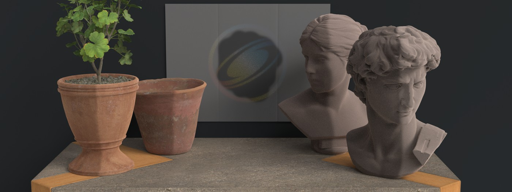
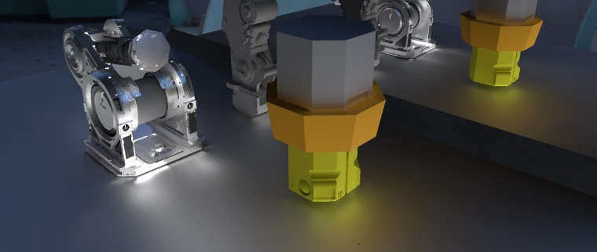
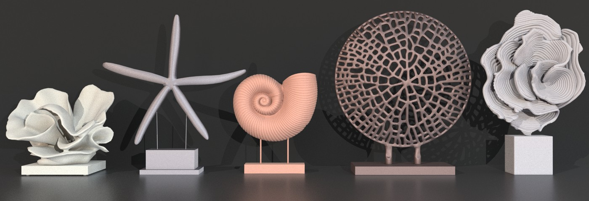

Research
-
Wet material rendering
Appearance models for wet, porous materials.
-
Microstructure reconstruction
Recovering surface microstructure from images.
-
Microfacet models
Multiple scattering of light between microfacets.
Publications
-

-

Computational Visual Media2024
Real-time All-frequency Global Illumination with Radiance Caching
-

SIGGRAPH Asia2023
Multiple-bounce Smith Microfacet BRDFs using the Invariance Principle
Projects
-
 Interactive WebGL2
Interactive WebGL2
Competition projectInteractive demo
Bubble Rendering Demo
Interactive soap bubbles in the browser, with thin-film interference and foam physics.
Open the demo
Education
-
Nanjing University
Ph.D. student in Computer Science and Technology (current)
-
Nanjing University of Science and Technology
M.S. in Computer Science and Technology
-
Harbin Engineering University
B.Eng. in Computer Science and Technology